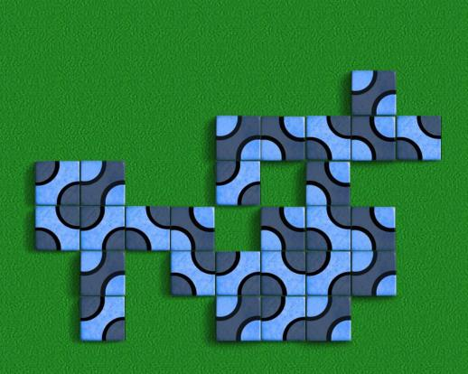

Che
Che est un jeu de pose de tuiles à motifs conçu par Cameron Browne. Il ressemble en bien des points à Palago, mais utilise les mêmes tuiles que Truchet. Le but du jeu est d'être le premier à construire un motif fermé de votre couleur, en jouant deux tuiles à la fois. La partie peut également se terminer (avec une autre condition de victoire) après que 64 tuiles aient été posées
Règles : Le premier joueur pose une tuile pour commencer la partie. À chaque tour suivant, deux tuiles sont posées, au contact de celles déjà en place, mais pas forcément l'une à côté de l'autre. Le premier joueur dont un motif est fermé gagne la partie. À défaut, une fois que la 64ème tuile est posée, la partie s'arrête et le vainqueur est le joueur possédant la zone connectée la plus grande.
Remarque : Che a tendance à être un jeu d'attaque agressif, mais l'attaque force le joueur en défense à constituer des grands groupes.
Robots : C'est un jeu difficile pour les robots, à moins que vous ne fassiez une erreur grossière.
|

|